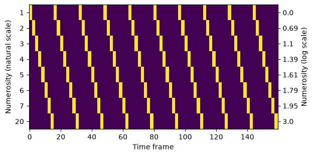

Creating a custom model¶
Author: Malte Lüken (m.luken@esciencecenter.nl)
Difficulty: Intermediate
This tutorial explains how to create a custom model with prfmodel.
Part 1: Implementing a 1D Gaussian pRF model¶
In the first part, I show how to implement a 1-dimensional Gaussian population receptive field (pRF) model analogous to the existing 2-dimensional model. The 1D model is often used to model neural responses to auditory or numerosity stimuli that lie on a single dimension (i.e., tone frequency or the displayed integer number).
Because prfmodel uses Keras for model fitting, we need to make sure that a backend is installed before we begin. In this tutorial, we use the TensorFlow backend.
import os
from importlib.util import find_spec
os.environ["KERAS_BACKEND"] = "tensorflow"
os.environ["TF_CPP_MIN_LOG_LEVEL"] = "1"
if find_spec("tensorflow") is None:
msg = "Could not find the tensorflow package. Please install tensorflow with 'pip install .[tensorflow]'"
raise ImportError(msg)
Creating a 1D stimulus¶
We start by creating a 1D PRFStimulus. In this example, we simulate a numerosity stimulus where different quantities of objects are consecutively presented on a screen. At each time frame, a different quantity (numerosity) is presented.
The numerosity dimension is represented as a 1D grid, and the stimulus design is a binary matrix indicating which numerosity is active at each time frame. We repeat each numerosity for two consecutive frames and repeat all numerosities 10 times. Instead of the raw numerosity integers, we use the log of the integers as the stimulus grid. This means that the pRF model will also receive the log numerosity as input and it’s parameters will live in the log numerosity space.
import numpy as np
from prfmodel.stimuli import PRFStimulus
num_frames = 160
unique_numerosities = np.array([1, 2, 3, 4, 5, 6, 7, 20])
unique_log_numerosities = np.log(unique_numerosities)
num_numerosities = unique_numerosities.shape[0]
# Create a 1D grid with unique log numerosities
grid = np.expand_dims(unique_log_numerosities, 1) # shape (num_numerosities, 1)
# Create the design containing one-hot encoded numerosities displayed at each time frame
design = np.zeros((num_frames, num_numerosities))
num_cycles = 10
frame = 0
for cycle in range(num_cycles):
for cycle_frame in range(num_frames // num_cycles):
numerosity_idx = cycle_frame // 2
# Insert a binary indicator for which numerosity is active
design[frame, numerosity_idx] = 1
frame += 1
WARNING: All log messages before absl::InitializeLog() is called are written to STDERR
I0000 00:00:1785325290.960631 4163 cudart_stub.cc:31] Could not find cuda drivers on your machine, GPU will not be used.
WARNING: All log messages before absl::InitializeLog() is called are written to STDERR
I0000 00:00:1785325292.417051 4163 cudart_stub.cc:31] Could not find cuda drivers on your machine, GPU will not be used.
We can visualize the design matrix with the displayed numerosity at each time frame on the natural and log scale.
import matplotlib.pyplot as plt
fig, ax = plt.subplots()
ax.imshow(design.T, aspect=num_frames/16)
ax.set_xlabel("Time frame")
ax.set_ylabel("Numerosity (natural scale)")
ax.set_yticks(np.arange(len(unique_numerosities)))
ax.set_yticklabels(unique_numerosities)
secax = ax.secondary_yaxis("right")
secax.set_ylabel("Numerosity (log scale)")
secax.set_yticks(np.arange(len(unique_numerosities)))
secax.set_yticklabels(np.round(unique_log_numerosities, 2));

We can create a PRFStimulus object with the design and grid.
stimulus = PRFStimulus(design=design, grid=grid, dimension_labels=["log_numerosity"])
print(stimulus)
PRFStimulus(design=array[160, 8], grid=array[8, 1], dimension_labels=['log_numerosity'])
Implementing the custom response model¶
Now we implement the 1D Gaussian response class by subclassing
BasePopulationResponse. We first take a look at the docstring of the class:
from prfmodel.models.base import BasePopulationResponse
help(BasePopulationResponse)
Help on class BasePopulationResponse in module prfmodel.models.base:
class BasePopulationResponse(prfmodel.utils.ModelProtocol, typing.Generic)
| BasePopulationResponse(*args, **kwargs)
|
| Generic abstract base class for neuron population response models.
|
| A neuron population response model takes a stimulus and parameters as input and predicts a population response.
|
| Notes
| -----
| This class cannot be instantiated on its own. It can only be used as a parent class to create custom response
| models. Subclasses must override the abstract :attr:`parameter_names` and :meth:`__call__` method.
| They must be defined with a specific stimulus type. See :mod:`~prfmodel.models.base` for details.
|
| Examples
| --------
| Reimplement a 2D isotropic Gaussian response model for a :class:`~prfmodel.stimuli.PRFStimulus`.
|
| >>> import pandas as pd
| >>> from prfmodel.examples import load_2d_prf_bar_stimulus
| >>> from prfmodel.stimuli import PRFStimulus
| >>> from prfmodel.models.prf import predict_gaussian_response
| >>> from prfmodel.utils import convert_parameters_to_tensor, get_dtype
| >>> from keras import ops
| >>> # Define custom child class
| >>> class CustomGaussian2DResponse(BasePopulationResponse[PRFStimulus]):
| ... @property
| ... def parameter_names(self):
| ... return ["mu_y", "mu_x", "sigma"]
| ... def __call__(self, stimulus, parameters, dtype=None):
| ... dtype = get_dtype(dtype)
| ... mu = convert_parameters_to_tensor(parameters[["mu_y", "mu_x"]], dtype=dtype)
| ... sigma = convert_parameters_to_tensor(parameters[["sigma"]], dtype=dtype)
| ... grid = ops.convert_to_tensor(stimulus.grid, dtype=dtype)
| ... return predict_gaussian_response(grid, mu, sigma)
| >>> # Load example pRF stimulus
| >>> stimulus = load_2d_prf_bar_stimulus()
| >>> # Define parameters
| >>> params = pd.DataFrame({
| ... "mu_y": [0.0, 1.0],
| ... "mu_x": [1.0, 0.0],
| ... "sigma": [1.0, 1.5],
| ... })
| >>> # Create child model instance
| >>> model = CustomGaussian2DResponse()
| >>> # Make model prediction for example stimulus
| >>> resp = model(stimulus, params)
| >>> print(resp.shape) # (num_units, num_y, num_x)
| (2, 128, 128)
|
| Method resolution order:
| BasePopulationResponse
| prfmodel.utils.ModelProtocol
| typing.Protocol
| typing.Generic
| builtins.object
|
| Methods defined here:
|
| __call__(self, stimulus: ~S, parameters: pandas.DataFrame, dtype: str | None = None) -> tensorflow.python.framework.tensor.Tensor
| Predict the model response for a stimulus.
|
| Parameters
| ----------
| stimulus : Stimulus
| Stimulus object.
| parameters : pandas.DataFrame
| Dataframe with columns containing different model parameters and rows containing parameter values
| for different units.
| dtype : str, optional
| The dtype of the prediction result. If `None` (the default), uses the dtype from
| :func:`prfmodel.utils.get_dtype`.
|
| Returns
| -------
| :data:`prfmodel.typing.Tensor`
| Model predictions of shape `(num_units, ...)` and dtype `dtype`. The number of units is the
| number of rows in `parameters`. The number and size of other axes depends on the stimulus.
|
| Raises
| ------
| ValueError
| If `parameters` is missing one or more of :attr:`parameter_names`.
|
| ----------------------------------------------------------------------
| Class methods defined here:
|
| __subclasshook__ = _proto_hook(other) from typing
|
| ----------------------------------------------------------------------
| Data and other attributes defined here:
|
| __abstractmethods__ = frozenset({'__call__', 'parameter_names'})
|
| __annotations__ = {}
|
| __orig_bases__ = (<class 'prfmodel.utils.ModelProtocol'>, typing.Gener...
|
| __parameters__ = (~S,)
|
| ----------------------------------------------------------------------
| Methods inherited from prfmodel.utils.ModelProtocol:
|
| __init__ = _no_init_or_replace_init(self, *args, **kwargs) from typing
|
| ----------------------------------------------------------------------
| Readonly properties inherited from prfmodel.utils.ModelProtocol:
|
| parameter_names
| A list with names of parameters that are used by the model.
|
| ----------------------------------------------------------------------
| Data descriptors inherited from prfmodel.utils.ModelProtocol:
|
| __dict__
| dictionary for instance variables
|
| __weakref__
| list of weak references to the object
|
| ----------------------------------------------------------------------
| Data and other attributes inherited from prfmodel.utils.ModelProtocol:
|
| __non_callable_proto_members__ = {'parameter_names'}
|
| __protocol_attrs__ = {'_check_parameters', 'parameter_names'}
|
| ----------------------------------------------------------------------
| Class methods inherited from typing.Protocol:
|
| __init_subclass__(*args, **kwargs)
| Function to initialize subclasses.
|
| ----------------------------------------------------------------------
| Class methods inherited from typing.Generic:
|
| __class_getitem__(...)
| Parameterizes a generic class.
|
| At least, parameterizing a generic class is the *main* thing this
| method does. For example, for some generic class `Foo`, this is called
| when we do `Foo[int]` - there, with `cls=Foo` and `params=int`.
|
| However, note that this method is also called when defining generic
| classes in the first place with `class Foo[T]: ...`.
We can see that BasePopulationResponse has two abstract methods that must be overridden when subclassing:
__abstractmethods__ = frozenset({'__call__', 'parameter_names'}).
The
parameter_namesproperty, which lists the parameter names the model expects.The
__call__method, which computes the pRF response for a given stimulus and parameter set. This method can implement an arbitrary response function, but here we re-use from the Gaussian module, which is dimension-agnostic and works for any number of spatial dimensions.
We can also see that BasePopulationResponse is a generic class with respect to the stimulus argument in the __call__ method.
This means we need to specify for which stimulus type the class is defined. In our case, this is the PRFStimulus class
(for a connective field response model, this would be CFStimulus).
import pandas as pd
from keras import ops
from prfmodel.models.prf import predict_gaussian_response
from prfmodel.stimuli import PRFStimulus
from prfmodel.utils import convert_parameters_to_tensor, get_dtype
# Define the generic class for the concrete 'PRFStimulus' type
class Gaussian1DPRFResponse(BasePopulationResponse[PRFStimulus]):
# 'parameter_names' is a property so that it becomes "immutable"
@property
def parameter_names(self) -> list[str]:
"""Names of parameters used by the model: `mu_x`, `sigma`."""
return ["mu_x", "sigma"]
def __call__(
self,
# The 'stimulus' argument must be the same type as the concrete type above
stimulus: PRFStimulus,
parameters: pd.DataFrame,
dtype: str | None = None,
):
"""Predict the model response for a stimulus with a 1D grid.
Parameters
----------
stimulus : PRFStimulus
Stimulus object.
parameters : pandas.DataFrame
Dataframe with columns containing different model parameters and rows containing parameter values
for different units.
dtype : str, optional
The dtype of the prediction result. If `None` (the default), uses the dtype from
:func:`prfmodel.utils.get_dtype`.
Returns
-------
Tensor
Model predictions of shape `(num_units, size_x)` and dtype `dtype`.
`num_units` is the number of rows in `parameters` and `size_x` is the size of the
stimulus grid dimension.
"""
# Explicit dtypes avoid dtype mismatch errors
dtype = get_dtype(dtype)
mu = convert_parameters_to_tensor(parameters[["mu_x"]], dtype=dtype)
sigma = convert_parameters_to_tensor(parameters[["sigma"]], dtype=dtype)
# Explicit tensor conversion avoids type mismatch errors
grid = ops.convert_to_tensor(stimulus.grid, dtype=dtype)
# We can implement the Gaussian response from scratch
# import math
# grid = ops.expand_dims(grid, 0)
# mu = ops.expand_dims(mu, 1)
# sigma_squared = ops.square(sigma)
# # Gaussian response
# resp = ops.sum(ops.square(grid - mu), axis=-1)
# resp /= 2 * sigma_squared
# # Divide by volume to normalize
# volume = (2 * math.pi * sigma_squared) ** (1 / 2)
# return ops.exp(-resp) / volume
# Or we can use an existing function to predict a Gaussian response
return predict_gaussian_response(grid, mu, sigma)
The mu_x parameter defines the preferred location on the stimulus dimension (here: preferred log numerosity) and sigma defines the tuning width. Both mu and sigma are converted from the parameters DataFrame to tensors with shapes (num_units, 1).
predict_gaussian_response expects mu and sigma to have at least two dimensions — the first for the number of units and the second for the number of spatial dimensions. The function then broadcasts these tensors against the stimulus grid to compute the Gaussian response for each unit.
Creating the model¶
With the Gaussian1DPRFResponse class defined, we pass it as the prf_model argument to CanonicalPRFModel. The canonical model handles stimulus encoding, impulse response convolution, and baseline amplitude scaling using default submodels.
from prfmodel.models.prf.canonical import CanonicalPRFModel
model = CanonicalPRFModel(
prf_model=Gaussian1DPRFResponse(),
)
We can inspect all parameters required by the composite model through the parameter_names property.
model.parameter_names
['mu_x', 'sigma', 'weight_deriv', 'baseline', 'amplitude']
The parameters mu_x and sigma come from our custom Gaussian1DResponse. The remaining parameters belong to the default impulse response model (DerivativeTwoGammaImpulse) and the scaling model (BaselineAmplitude).
Simulating a neural response¶
Let’s simulate predicted neural responses for each unique numerosity while keeping the tuning width fixed to sigma = 1.
num_units = len(unique_numerosities)
params_mu_x = pd.DataFrame(
{
"mu_x": unique_log_numerosities, # We need to specify the location of the Gaussian in log space
"sigma": [1.0] * num_units, # We keep the tuning width fixed
"weight_deriv": [0.5] * num_units,
"baseline": [0.0] * num_units,
"amplitude": [1.0] * num_units,
}
)
prediction = np.asarray(model(stimulus, params_mu_x))
print(prediction.shape)
(8, 160)
E0000 00:00:1785325294.217583 4163 cuda_platform.cc:52] failed call to cuInit: INTERNAL: CUDA error: Failed call to cuInit: UNKNOWN ERROR (303)
The output has shape (8, num_frames) – one predicted time course for each unique numerosity.
We can visualize the predicted response over time.
import plotly.io as pio
import plotly.express as px
pio.renderers.default = "notebook_connected" # Requires internet connection to work
pio.templates.default = "simple_white"
fig = px.line(
prediction.T,
animation_frame="variable",
range_x=(0, num_frames),
range_y=(-0.1, 0.6),
labels={
"index": "Time frame",
"value": "Predicted neural response",
"variable": "Numerosity (natural scale)",
},
)
fig.update_layout(showlegend=False, height=450)
fig.show()
The predicted response peaks around the time frames at which the stimulus design passes through each units’s preferred frequency, and decays afterwards due to the impulse response convolution. This is exactly what we would expect from a 1D Gaussian pRF model.
We can also simulate and visualize predicted timecourses for different tuning widths sigma.
num_units = 10
params_sigma = pd.DataFrame(
{
"mu_x": np.log([3] * num_units),
"sigma": np.linspace(0.05, 3.0, num_units),
"weight_deriv": [0.5] * num_units,
"baseline": [0.0] * num_units,
"amplitude": [1.0] * num_units,
}
)
prediction = np.asarray(model(stimulus, params_sigma))
fig = px.line(
prediction.T,
animation_frame="variable",
range_x=(0, num_frames),
range_y=(-2.0, 5.0),
labels={
"index": "Time frame",
"value": "Predicted neural response",
"variable": "pRF width (sigma)",
},
)
fig.update_layout(showlegend=False, height=450)
fig.show()
We can see that the tuning width determines the sharpness of the predicted response peaks.
Part 2: TBD¶
This part will be added in a future version.
Conclusion¶
In this tutorial, I showed how to create a custom 1D Gaussian pRF model for a fictional numerosity experiment. I first created a stimulus for the fictional experiment. Then, I created a custom pRF response model and inserted it into the default composite pRF model that combines the pRF response with an impulse and scaling model.
References¶
Harvey, B. M., Klein, B. P., Petridou, N., & Dumoulin, S. O. (2013). Topographic representation of numerosity in the human parietal cortex. Science, 341(6150), 1123-1126. https://doi.org/10.1126/science.1239052